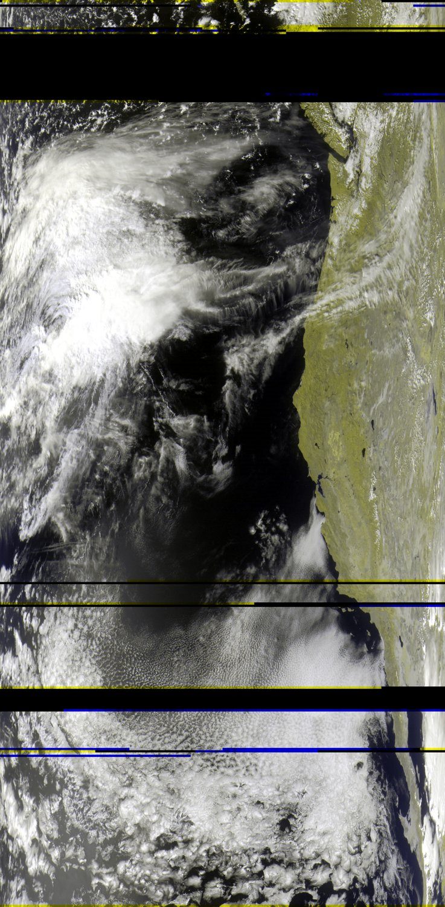

· Meteor M2-4
Meteor M2-4:
From Signal to Image
The full field report: antenna, radio signal, decoding, and the images recovered from the first pass.
Read the complete report →A small weather-satellite reception notebook
With a V dipole, SDR and laptop, I recorded Meteor satellites passing over the San Francisco Bay Area. Their radio transmissions became images of the Pacific and its cloud systems.
Start with the M2-4 report for the complete signal-to-image explanation. The M2-3 report shows what happened on a shorter pass the next day.

· Meteor M2-4
The full field report: antenna, radio signal, decoding, and the images recovered from the first pass.
Read the complete report →
· Meteor M2-3
A coastal view from a different satellite, with reception ending when an obstacle blocked its path.
See the M2-3 observation →The reports use a broad receiving area. Exact observing coordinates are kept private.